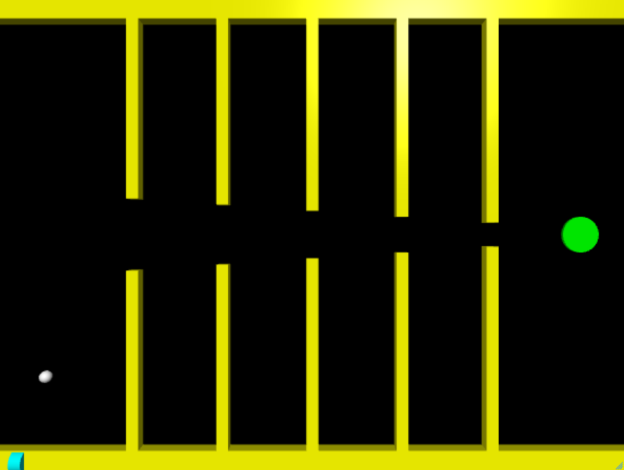

Shoot the Puck

Shoot the Puck is an interactive physics-based game developed using Web VPython that challenges players to accurately launch a ball through a maze and into a target. The player controls the vertical position of the ball and adjusts its launch power using keyboard inputs, then fires it toward the goal using the spacebar. The objective is to navigate through narrow pathways and successfully land the ball in the designated hole.
The project incorporates core physics concepts such as friction, velocity, and net force to simulate realistic motion. A friction model was implemented to gradually slow the ball after launch, requiring players to carefully balance power and positioning. Collision detection logic ensures that the ball resets upon contact with maze walls, reinforcing precision and control.
Through this project, I gained experience implementing real-time simulations, handling user input, and applying physics-based calculations in a game environment. Shoot the Puck demonstrates my ability to integrate mathematical modeling, interactive controls, and game logic to create an engaging and responsive application.